The way your web content behaves on mobile can be dramatically different from the desktop experience. Remote debugging with Chrome DevTools lets you debug live content on your Android device from your development machine.
Note: Remote debugging requires your version of desktop Chrome to be newer than the version of Chrome for Android on your device.
For best results, use Chrome Canary (Mac/Windows) or the Chrome Dev channel release (Linux) on desktop.
If at any time you encounter problems with remote debugging, refer to the Troubleshooting section.
Setting up your Android device
Follow these instructions to set up your Android device for remote debugging.
1. Enable USB debugging
On your Android device, select Settings > Developer options.
Developer options on the Settings page.
Note: On Android 4.2 and later, the developer options are hidden by default. To enable the developer options, select Settings > About phone and tap Build number seven times.
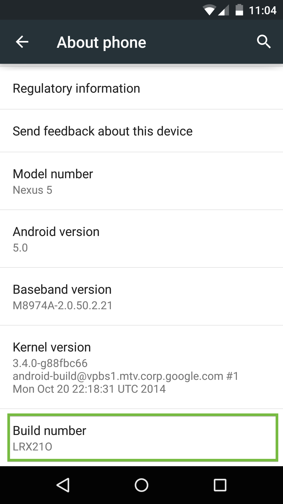
Enabling the developer options on Android 4.2+.
In Developer options, select the USB debugging checkbox:
Enabling USB debugging on Android.
An alert prompts you to allow USB debugging. Tap OK.
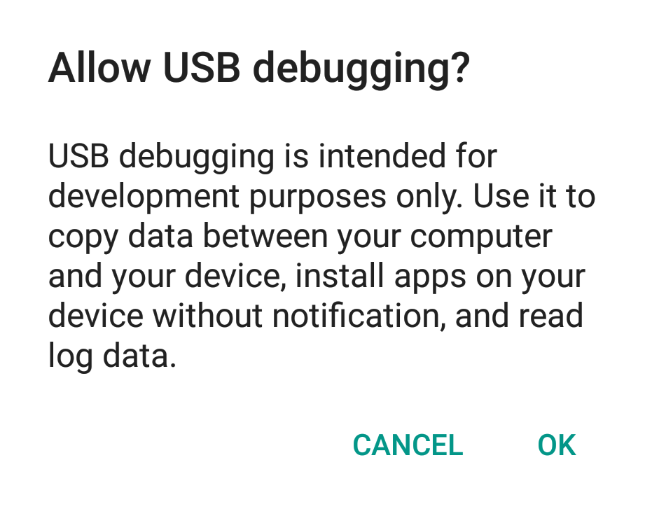
2. Connect your device
Connect the Android device to your development machine using a USB cable.
Note: If you are developing on Windows, install the appropriate USB driver for your device. See OEM USB Drivers on the Android Developers' site.
Discovering devices in Chrome
After setting up remote debugging on Android, discover your device in Chrome.
On your desktop Chrome browser, navigate to chrome://inspect. Confirm that Discover USB devices is checked:
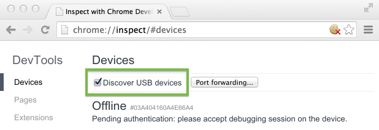
Tip: You can also get to chrome://inspect by selecting Chrome menu > More tools > Inspect Devices.
On your device, an alert prompts you to allow USB debugging from your computer. Tap OK.
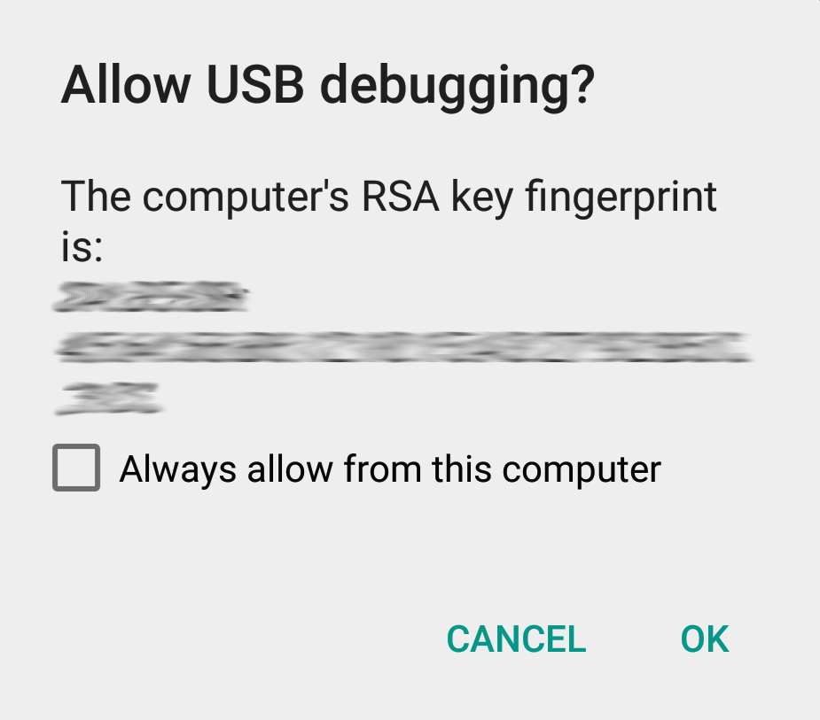
Tip: To skip this alert in the future, check Always allow from this computer.
The message USB debugging connected displays in the device's notification drawer.
Note: During remote debugging, Chrome prevents your device’s screen from going to sleep. This feature is useful for debugging, but is also less secure. So be sure to keep an eye on your device!
On your computer, the chrome://inspect page displays every connected device, along with its open tabs and debug-enabled WebViews.
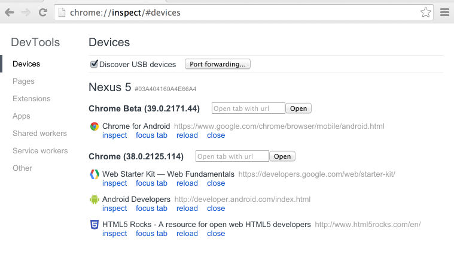
Viewing connected devices from the chrome://inspect page.
If you have problems finding your device on the chrome://inspect page, see the Troubleshooting section.
Debugging remote browser tabs
From the chrome://inspect page, you can launch DevTools and debug your remote browser tabs.
To start debugging, click inspect below the browser tab you want to debug.
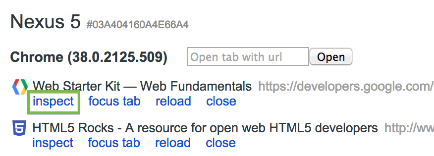
A new instance of Chrome DevTools launches on your computer. From this instance, you can interact with the selected browser tab on your device in real time.
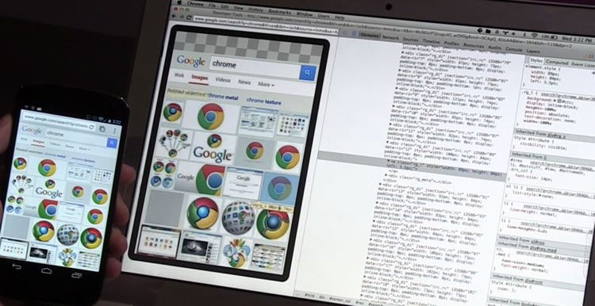
Debug a web page on your Android phone from your laptop using Chrome DevTools.
For example, you can use DevTools to inspect web page elements on your device:
When you mouse over an element in the Elements panel, DevTools highlights the element on your device.
You can also click the Inspect Element icon in DevTools and tap your device screen. DevTools highlights the tapped element in the Elements panel.
Note: The version of Chrome on your device determines the version of DevTools used during remote debugging. For this reason, the remote debugging DevTools might differ from the version that you normally use.
Debugging tips
Here are a few tips to help get you started with remote debugging:
Use F5 (or Cmd+r on Mac) to reload a remote page from the DevTools window.
Keep the device on a cellular network. Use the Network panel to view the network waterfall under actual mobile conditions.
Use the Timeline panel to analyze rendering and CPU usage. Hardware on mobile devices often runs much slower than on your development machine.
On Android 4.4 (KitKat) or later, you can use DevTools to debug WebView content in native Android applications.
Configure WebViews for debugging
WebView debugging must be enabled from within your application. To enable WebView debugging, call the static method setWebContentsDebuggingEnabled on the WebView class.
if (Build.VERSION.SDK_INT >= Build.VERSION_CODES.KITKAT) {
WebView.setWebContentsDebuggingEnabled(true);
}
This setting applies to all of the application's WebViews.
Tip: WebView debugging is not affected by the state of the debuggable flag in the application's manifest. If you want to enable WebView debugging only when debuggable is true, test the flag at runtime.
if (Build.VERSION.SDK_INT >= Build.VERSION_CODES.KITKAT) {
if (0 != (getApplicationInfo().flags &= ApplicationInfo.FLAG_DEBUGGABLE))
{ WebView.setWebContentsDebuggingEnabled(true); }
}
Open a WebView in DevTools
The chrome://inspect page displays a list of debug-enabled WebViews on your device.
To start debugging, click inspect below the WebView you want to debug. Use DevTools as you would for a remote browser tab.
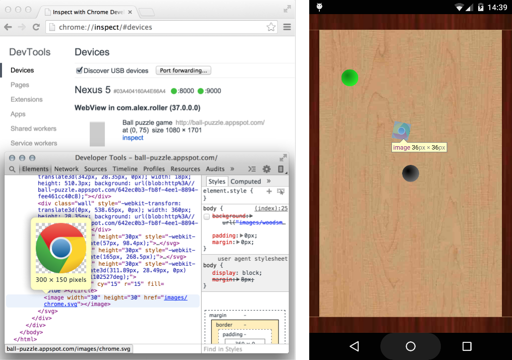
Debugging a remote Android WebView with the Chrome DevTools.
The gray graphics listed with the WebView represent its size and position relative to the device's screen. If your WebViews have titles set, the titles are listed as well.
Live screencasting
Shifting your attention between screens isn’t always convenient. Screencast displays your device's screen right alongside DevTools on your development machine. You can interact with the content on your device from the screencast too.
As of KitKat 4.4.3, screencast is available for both browser tabs and Android WebViews.
Start a screencast session
To start screencasting, click the Screencast icon in the upper right corner of your remote debugging DevTools window.
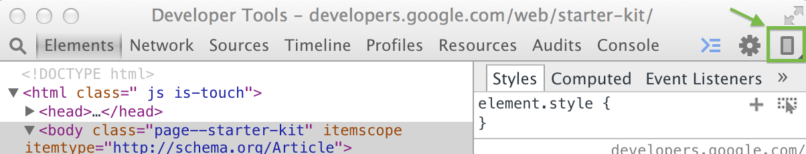
The Screencast icon.
The Screencast panel opens on the left and displays a live view of your device's screen.
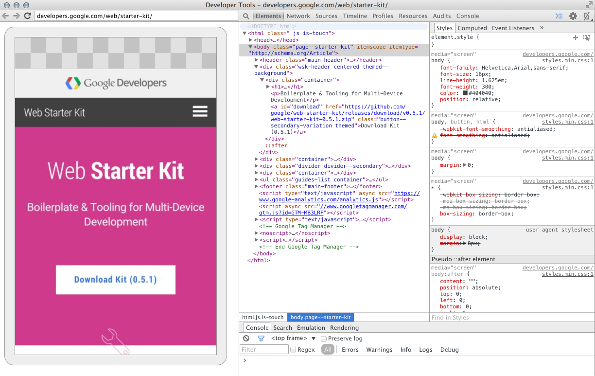
Live interactive screencast from your Android to your laptop.
Screencast only displays page content. Transparent portions of the screencast are covered by the omnibox, device keyboard, and other device interfaces.
Note: Because screencast continuously captures frames, it has some performance overhead. If your tests are sensitive to frame rate, disable screencast.
Interact with your device using the screencast
When you interact with the screencast, clicks are translated into taps, firing proper touch events on the device. Keystrokes from your computer are sent to the device, so you can avoid typing with your thumbs.
Other DevTools work with the screencast too. For example, to inspect an element, click the Inspect Element icon and then click inside the screencast.
Tips: To simulate a pinch gesture, hold Shift while dragging. To scroll, use your trackpad or mouse wheel or fling with your pointer.
Port forwarding
Your phone can't always reach the content on your development server. They might be on different networks. Moreover, you might be developing on a restricted corporate network.
Port forwarding on Chrome for Android makes it easy to test your development site on mobile. It works by creating a listening TCP port on your mobile device that maps to a particular TCP port on your development machine. Traffic between these ports travels through USB, so the connection doesn't depend on your network configuration.
To enable port forwarding:
Open chrome://inspect on your development machine.
Click Port Forwarding. The port forwarding settings display.
In the Device port field, enter the port number you want your Android device to listen on.
(The default port is 8080.)
In the Host field, enter the IP address (or hostname) and port number where your web application is running.
This address can be any local location accessible from your development machine. Currently, port numbers must be between 1024 and 32767 (inclusive).
Check Enable port forwarding.
Click Done.
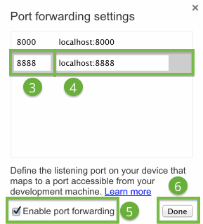
The port forwarding settings.
The port status indicators on chrome://inspect are green when port forwarding is successful.
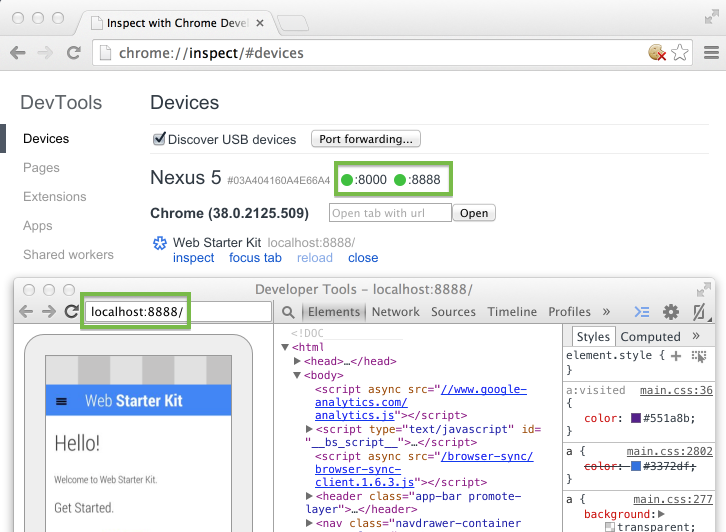
Viewing the content of your local web server on Android using port forwarding.
Now you can open a new Chrome for Android tab and view the content of your local server on your device.
Virtual host mapping
Port forwarding works great when you're developing on localhost. But there are cases when you might be using a customized local domain.
For example, suppose you're using a third party JavaScript SDK that only works on whitelisted domains. So you added an entry, such as 127.0.0.1 production.com, to your hosts file. Or maybe you configured a customized domain using virtual hosts on your web server (MAMP).
If you want your phone to reach content on your customized domain, you can use port forwarding in combination with a proxy server. The proxy maps requests from your device to the correct location on the host machine.
Set up port forwarding to a proxy
Virtual host mapping requires you to run a proxy server on the host machine. All requests from your Android device will be forwarded to the proxy.
To set up port forwarding to a proxy:
On the host machine, install proxy software such as Charles Proxy (free trial available) or Squid.
Run the proxy server and note the port that it's using.
Note: The proxy server and your development server must be running on different ports.
In a Chrome browser, navigate to chrome://inspect.
Click Port forwarding. The port forwarding settings display.
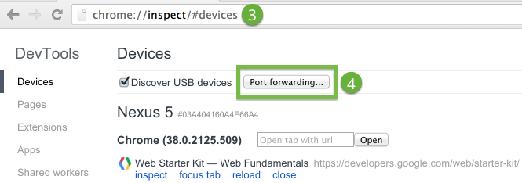
In the Device port field, enter the port number that you want your Android device to listen on.
Use a port that Android allows, such as 9000.
In the Host field, enter localhost:xxxx, where xxxx is the port your proxy is running on.
Check Enable port forwarding.
Click Done.
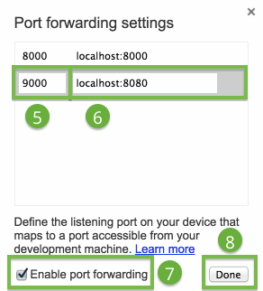
Port forwarding to a proxy.
The proxy on the host machine is set up to make requests on behalf of your Android device.
Configure proxy settings on your device
Your Android device needs to communicate with the proxy on the host machine.
To configure the proxy settings on your device:
Select Settings > Wi-Fi.
Long-press the network that you are currently connected to.
Note: Proxy settings apply per network.
Tap Modify network.
Select Advanced options.
The proxy settings display.
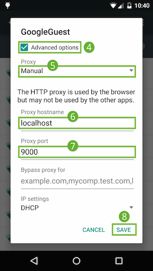
Proxy settings on the device.
Tap the Proxy menu and select Manual.
In the Proxy hostname field, enter localhost.
In the Proxy port field, enter 9000.
Tap Save.
With these settings, your device forwards all of its requests to the proxy on the host machine. The proxy makes requests on behalf of your device, so requests to your customized local domain are properly resolved.
Now you can load local domains on Chrome for Android just as you would on the host machine.
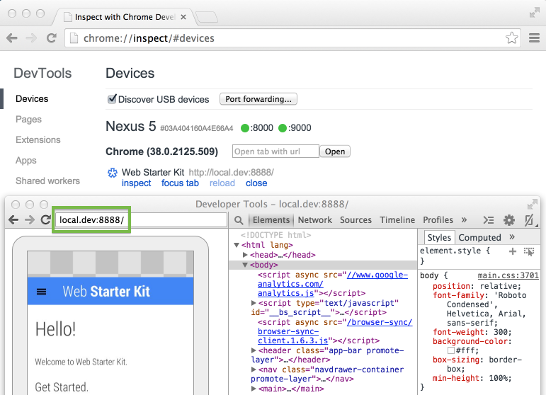
Using virtual host mapping to access a customized local domain from an Android device.
Tip: To resume normal browsing, remember to revert the proxy settings on your device after you disconnect from the host.
Troubleshooting
I can't see my device on the chrome://inspect page.
If you are developing on Windows, verify that the appropriate USB driver for your device is installed. See OEM USB Drivers on the Android Developers' site.
Verify that the device is connected directly to your machine, bypassing any hubs.
Verify that USB debugging is enabled on your device. Remember to accept the USB debugging permission alerts on your device.
On your desktop browser, navigate to chrome://inspect and verify that Discover USB devices is checked.
Remote debugging requires your version of desktop Chrome to be newer than the version of Chrome for Android on your device. Try using Chrome Canary (Mac/Windows) or the Chrome Dev channel release (Linux) on desktop.
If you still can't see your device, unplug it. On your device, select Settings > Developer options. Tap Revoke USB debugging authorizations. Then, retry the device setup and discovery processes.
I can't see my browser tabs on the chrome://inspect page.
On your device, open the Chrome browser and navigate to the web page you want to debug. Then, refresh the chrome://inspect page.
I can't see my WebViews on the chrome://inspect page.
On your device, open the app with the WebView you want to debug. Then, refresh the chrome://inspect page.
I can't access my web server from my Android device.
If network restrictions prevent your mobile device from accessing your development server, try enabling port forwarding or setting up a virtual host map.
Lastly, if remote debugging still isn't working, you can revert to the legacy workflow using the adb binary from the Android SDK.
Additional information
Remote debugging and ADB
You no longer need to configure ADB or the ADB plugin to debug remote browser tabs and WebViews. Remote debugging for Android is now part of the standard Chrome DevTools. It works on all operating systems: Windows, Mac, Linux, and Chrome OS.
If you do encounter problems with remote debugging, you can try the legacy workflow using the adb binary from the Android SDK.
Note: The direct USB connection between Chrome and the device might interrupt your adb connection. Before establishing your adb connection, uncheck Discover USB devices on chrome://inspect. Then, disconnect and reconnect the device.
Remote debugging for DevTools extension developers
For information about the remote debugging interaction protocol, refer to the Debugger Protocol documentation and chrome.debugger.